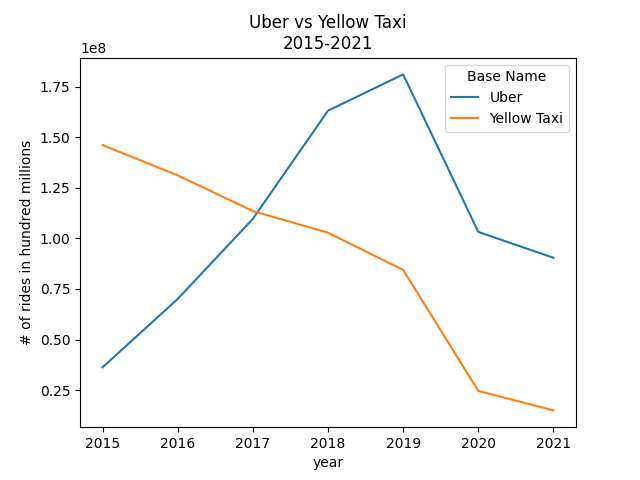
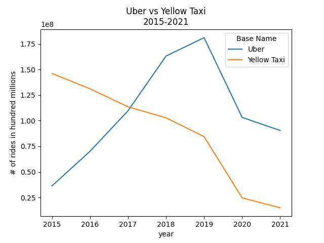

1. A sum of Uber's total rides from 2015 to present date.
Using the uber_Data.csv file, Uber had a total of 753,714,454 from 2015 to present date.
df = pd.read_csv('uber_Data.csv')
df['Total Dispatched Trips'] = df['Total Dispatched Trips'].str.replace(",","").astype(float)
total = df['Total Dispatched Trips'].sum()
print(total)
2. Analyzing Yellow Taxi's monthly raw data from 2015 to present date.
An example of how the Yellow Taxi's yearly data was gathered from it's monthly raw data is below, using year 2015. This code was applied to years 2016-2021, with the year changed on each file and variable.
import pandas as pd
#Total number of Jan 2015 yellow-taxi trips.
jan2015 = pd.read_csv('yellow_tripdata_2015-01.csv',low_memory=False)
trips_01_2015 = len(jan2015)+1
##print(trips_01_2015)
#Total number of Feb 2015 yellow-taxi trips.
feb2015 = pd.read_csv('yellow_tripdata_2015-02.csv',low_memory=False)
trips_02_2015 = len(feb2015)+1
##print(trips_02_2015)
#Total number of March 2015 yellow-taxi trips.
mar2015 = pd.read_csv('yellow_tripdata_2015-03.csv',low_memory=False)
trips_03_2015 = len(mar2015)+1
##print(trips_03_2015)
#Total number of April 2015 yellow-taxi trips.
apr2015 = pd.read_csv('yellow_tripdata_2015-04.csv',low_memory=False)
trips_04_2015 = len(apr2015)+1
##print(trips_04_2015)
#Total number of May 2015 yellow-taxi trips.
may2015 = pd.read_csv('yellow_tripdata_2015-05.csv',low_memory=False)
trips_05_2015 = len(may2015)+1
##print(trips_05_2015)
#Total number of June 2015 yellow-taxi trips.
jun2015 = pd.read_csv('yellow_tripdata_2015-06.csv',low_memory=False)
trips_06_2015 = len(jun2015)+1
##print(trips_06_2015)
#Total number of July 2015 yellow-taxi trips.
july2015 = pd.read_csv('yellow_tripdata_2015-07.csv',low_memory=False)
trips_07_2015 = len(july2015)+1
##print(trips_07_2015)
#Total number of August 2015 yellow-taxi trips.
aug2015 = pd.read_csv('yellow_tripdata_2015-08.csv',low_memory=False)
trips_08_2015 = len(aug2015)+1
##print(trips_08_2015)
#Total number of September 2015 yellow-taxi trips.
sept2015 = pd.read_csv('yellow_tripdata_2015-09.csv',low_memory=False)
trips_09_2015 = len(sept2015)+1
##print(trips_09_2015)
#Total number of October 2015 yellow-taxi trips.
oct2015 = pd.read_csv('yellow_tripdata_2015-10.csv',low_memory=False)
trips_10_2015 = len(oct2015)+1
##print(trips_10_2015)
#Total number of November 2015 yellow-taxi trips.
nov2015 = pd.read_csv('yellow_tripdata_2015-11.csv',low_memory=False)
trips_11_2015 = len(nov2015)+1
##print(trips_11_2015)
#Total number of December 2015 yellow-taxi trips.
dec2015 = pd.read_csv('yellow_tripdata_2015-12.csv',low_memory=False)
trips_12_2015 = len(dec2015)+1
##print(trips_12_2015)
list_2015 = [trips_01_2015,trips_02_2015,trips_03_2015,trips_04_2015,trips_05_2015,trips_06_2015,
trips_07_2015,trips_08_2015,trips_09_2015,trips_10_2015,trips_11_2015,trips_12_2015]
df2015 = pd.DataFrame(list_2015, columns = ['2015'])
df2015.to_csv('yellow-taxi-2015.csv', index=False)
Using the code above, the Yellow Taxi's monthly raw data from 2015 to present date was summed and compiled into yearly spreadsheets, which were also then compiled into one large file. Those files were used to produce the tables and graph below.
import matplotlib.pyplot as plt
import pandas as pd
#Read in each CSV file compiled from monthly raw data.
data1 = pd.read_csv('yellow-taxi-2015.csv')
data2 = pd.read_csv('yellow-taxi-2016.csv')
data3 = pd.read_csv('yellow-taxi-2017.csv')
data4 = pd.read_csv('yellow-taxi-2018.csv')
data5 = pd.read_csv('yellow-taxi-2019.csv')
data6 = pd.read_csv('yellow-taxi-2020.csv')
data7 = pd.read_csv('yellow-taxi-2021.csv')
#Concatenate the dataframes.
frames = [data1, data2, data3, data4, data5, data6, data7]
df = pd.concat(frames, axis = 1)
#Find the difference in trips between each year.
print(df.diff(axis = 1))
print(df.sum().diff())
#Prepare file to merge.
df = df.fillna(0)
result = df.sum(axis=0)
result.to_csv('yellow_taxidata.csv', index=True, index_label='Year', header=['Total Dispatched Trips'])
ax = result.plot(kind='line', title='Yellow Taxi Decline\n2015-2021')
ax.set(xlabel='year', ylabel='# of rides in hundred millions')
fig2 = plt.gcf()
fig2.savefig('yellow_taxidecline.png')
plt.show()
| 2015 | 2016 | 2017 | 2018 | 2019 | 2020 | 2021 | |
|---|---|---|---|---|---|---|---|
| 0 | NaN | -1842128 | -1196734 | -950250 | -1092082 | -1262784 | -5035243 |
| 1 | NaN | -1068472 | -2213224 | -676749 | -1472701 | -720021 | -4927646 |
| 2 | NaN | -1140657 | -1916324 | -864252 | -1597831 | -4825253 | -1082140 |
| 3 | NaN | -1137451 | -1888150 | -740673 | -1872376 | -7195146 | 1933194 |
| 4 | NaN |
-1321409 | -1734729 | -878061 | -1658802 | -7216890 | 2158738 |
| 5 | NaN |
-1189465 | -1478477 | -943162 | -1772807 | -6391264 | 2284504 |
| 6 | NaN |
-1268703 | -1705594 | -738738 | -1539329 | -5510007 | 2021103 |
| 7 | NaN |
-1188041 | -1520110 | -573019 | -1775777 | -5066073 | NaN |
| 8 | NaN |
-1109045 | -1170559 | -905326 | -1472345 | -5226776 | NaN |
| 9 | NaN |
-1460862 | -1085811 | -947710 | -1607214 | -5532760 | NaN |
| 10 | NaN |
-1210548 | -817325 | -1139639 | -1267053 | -5369126 | NaN |
| 11 | NaN |
-1011165 | -941132 | -1335045 | -1276914 | -5434420 | NaN |

3. Working with Uber's, Yellow Taxi's, and TLC's small business data.
A more comprehensive analysis was done using the FHV_Base_Aggregate_Report.csv file, which is a tally of all non-yellow-cab rides in NYC between 2015 and 2021, and the yellow_taxidata.csv file, which I produced from the Yellow Taxi's raw data and the code above. Analyzing these files produced a pivot table and the graphs below (Uber vs NYC Rides and Uber vs Yellow Taxi Rides).
import matplotlib.pyplot as plt
import pandas as pd
import pandasql as psql
#Read the CSV files into a dataframe.
df1 = pd.read_csv('FHV_Base_Aggregate_Report.csv')
df2 = pd.read_csv('yellow_taxidata.csv')
"""
Clean the data.
1. Change the case for the `Base Name` column.
2. Convert each value in the `Total Dispatched Trips` column to integers.
3. Add the `Base Name` column to the second data frame.
4. Reindex the second dataframe to match the first.
"""
df1['Base Name']= df1['Base Name'].str.upper().str.title()
df1['Total Dispatched Trips'] = df1['Total Dispatched Trips'].str.replace(",","").astype(int)
df2['Base Name'] = 'Yellow Taxi'
df2 = df2.reindex(columns=['Base Name', 'Year', 'Total Dispatched Trips'])
#Organize/select the data from the first dataframe.
name_year_trips = """
SELECT DISTINCT `BASE NAME`, YEAR, SUM(`TOTAL DISPATCHED TRIPS`) AS `Total Dispatched Trips`
FROM df1
GROUP BY `BASE NAME`, YEAR
"""
query = psql.sqldf(name_year_trips)
#Join the data from the two dataframes.
frames = [query, df2]
concat = pd.concat(frames, ignore_index=True)
#Create the pivot table.
pivot = pd.pivot_table(concat, index='Base Name',
columns='Year',
values='Total Dispatched Trips',
aggfunc='sum',
fill_value=0,
margins=True,
margins_name='Total').sort_values('Total',
ascending=False)
#Save this data to a CSV file for later use.
pivot.to_csv('aggregate_analysis.csv')
#Working with the same pivot table, view the top 5 companies and drop the totals row and column.
pivot = pivot.drop(columns='Total')
pivot = pivot.drop('Total')
top_cabs = pivot.head(5)
#Transpose the rows and columns to arrange the data in such a way that it can be graphed.
top_cabs_transposed = top_cabs.T
#Graph, save, and show the data.
ax = top_cabs_transposed.plot(kind='line', title='Uber vs NYC Rides\n2015-2021')
ax.set(xlabel='year', ylabel='# of rides in hundred millions')
fig = plt.gcf()
fig.savefig('ubervsnyc.png')
plt.show()
#Pulling only Uber's and Yellow Taxi's data using the methods above.
top_cabs2 = pivot.head(2)
top_cabs_transposed2 = top_cabs2.T
bx = top_cabs_transposed2.plot(kind='line', title='Uber vs Yellow Taxi Rides\n2015-2021')
bx.set(xlabel='year', ylabel='# of rides in hundred millions')
fig = plt.gcf()
fig.savefig('ubervsyt.png')
plt.show()
 
